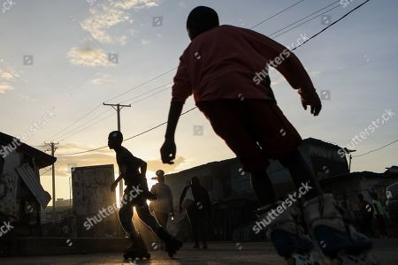
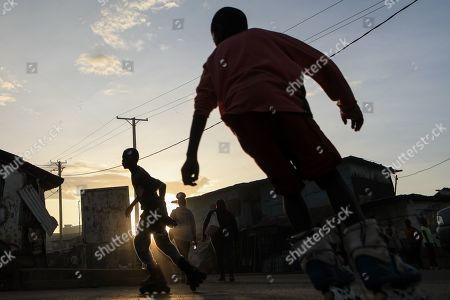
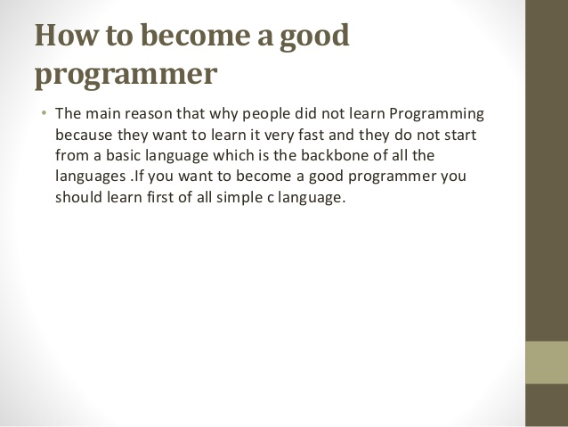

Hello I'm

Hello I'm
Went to school when I was five years old. I did my Kenya Certificate Of Education in the year 2012.Later I joined high school in the year 2013, this is because I had lacked fees in the previous year.I managed to complete my high school education in the year 2017.I never went through campus life.
My favorite hobbies are: cooking, swimming, socializing, watching, travelling and skating.
 , 
, 
I have gained skills in using html, css and some of knowledge in Java Script and Media Query.
Having these skills I can comfortably say that am doing fine with programming field
My dream job is to become one of the best software programmers in the world.
Because programming is awesome and programming for the internet is even more awesome and I want to be a boss of my own in the future.Also I will have an option to go indie.Moreso it is a creative outlet.Also coding is social.
I have a good experience in my casual jobs but not the office jobs.This is because I have never been took in for an interview to work in such place, but on my casual jobs, the experience is just fantastic.